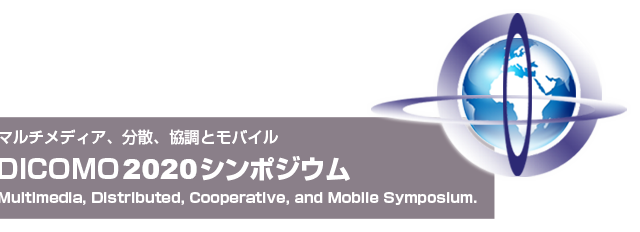

日程：2020年6月24日(水)～26日(金)
会場：オンライン開催
主催：一般社団法人情報処理学会 マルチメディア通信と分散処理(DPS)研究会、グループウェアとネットワークサービス(GN)研究会、モバイルコンピューティングとパーベイシブシステム(MBL)研究会、コンピュータセキュリティ(CSEC)研究会、高度交通システムとスマートコミュニティ(ITS)研究会、ユビキタスコンピューティングシステム(UBI)研究会、インターネットと運用技術(IOT)研究会、セキュリティ心理学とトラスト(SPT)研究会、コンシューマ・デバイス＆システム(CDS)研究会、デジタルコンテンツクリエーション(DCC)研究会
